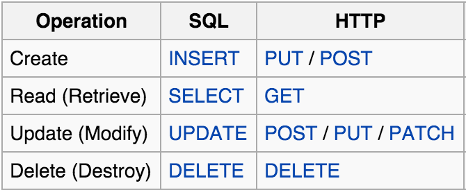

CRUD - create, read, update, delete - provides the four foundational functions for providing persistence for data. In the context of Rails CRUD aligns nicely with the REST convention, an HTTP architectural constraint that structures ways to handle requests/responses. The main REST verbs that align with CRUD are get, post, patch, put, and delete . Fortuitously, these actions are all the foundation actions that a Relational Database Management System uses as well. 
Rails makes it extremely simple to implement a basic CRUD application (especially if we use something like scaffolding). On the one hand, we can implement it by hand drawing our routes, mapping the CRUD to the REST convention. I think here Rails is building on things like Rack to enable things like wild-card matching or named params with things like `/:id`.
Of course, there is an easier way of doing this by using resources.
This draws up the same named routes at the above, but in simple manner. These resources can also be name-spaced, as well as nested within other resources.
The corresponding actions from these routes are mapped to their controller. It's here in the controller that tasks will be delegated to being crudded in the database, displayed in the view etc. Our products controller here implements aligns with the REST verbs defined in the route and maps them to CRUD actions with a few linguistic variations (index, new, destroy etc.).
It's worth noting that in the controller here we're also using things like strong params which protects us from mass assignment. We're also using callbacks like before_action to call certain methods that during specific actions during the request/response cycle. In this case we're simply fetching the id of an object in order to DRY up our code. We're also using sessions by assigning flash messages during important moments of logic in the controller.